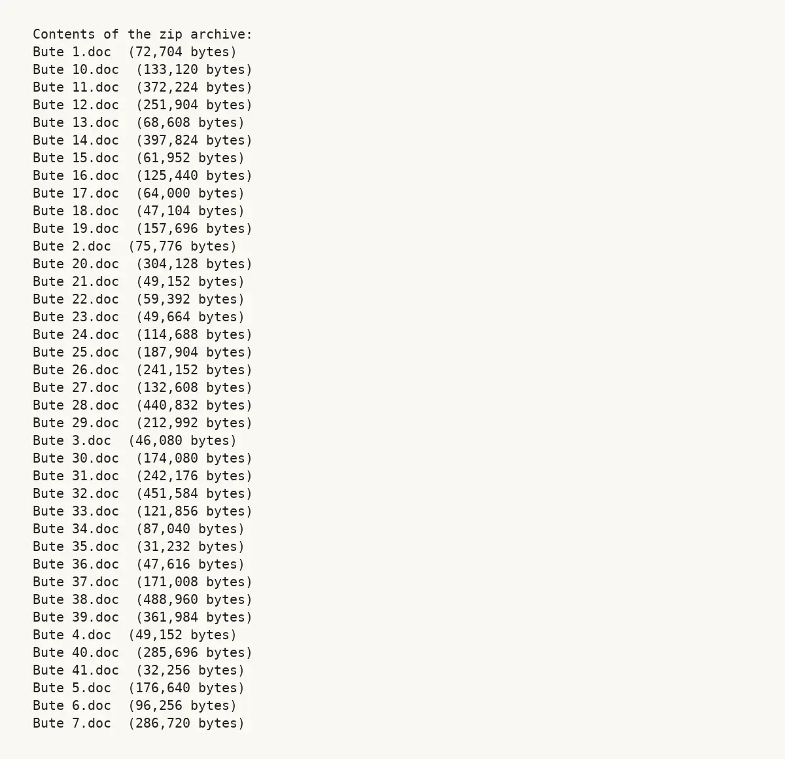

GHF-E106-R24-A2 partial
Bute catalogue documents (41 Word files, zipped)

Transcript
Contents of the zip archive: Bute 1.doc (72,704 bytes) Bute 10.doc (133,120 bytes) Bute 11.doc (372,224 bytes) Bute 12.doc (251,904 bytes) Bute 13.doc (68,608 bytes) Bute 14.doc (397,824 bytes) Bute 15.doc (61,952 bytes) Bute 16.doc (125,440 bytes) Bute 17.doc (64,000 bytes) Bute 18.doc (47,104 bytes) Bute 19.doc (157,696 bytes) Bute 2.doc (75,776 bytes) Bute 20.doc (304,128 bytes) Bute 21.doc (49,152 bytes) Bute 22.doc (59,392 bytes) Bute 23.doc (49,664 bytes) Bute 24.doc (114,688 bytes) Bute 25.doc (187,904 bytes) Bute 26.doc (241,152 bytes) Bute 27.doc (132,608 bytes) Bute 28.doc (440,832 bytes) Bute 29.doc (212,992 bytes) Bute 3.doc (46,080 bytes) Bute 30.doc (174,080 bytes) Bute 31.doc (242,176 bytes) Bute 32.doc (451,584 bytes) Bute 33.doc (121,856 bytes) Bute 34.doc (87,040 bytes) Bute 35.doc (31,232 bytes) Bute 36.doc (47,616 bytes) Bute 37.doc (171,008 bytes) Bute 38.doc (488,960 bytes) Bute 39.doc (361,984 bytes) Bute 4.doc (49,152 bytes) Bute 40.doc (285,696 bytes) Bute 41.doc (32,256 bytes) Bute 5.doc (176,640 bytes) Bute 6.doc (96,256 bytes) Bute 7.doc (286,720 bytes) Bute 8.doc (39,424 bytes) Bute 9.doc (685,056 bytes)
Artifact description
Provides details on a named deed, confirms no further deeds or quarrying records, and redirects to other bodies for additional material.
| Catalogue ID | GHF-E106-R24-A2 |
|---|---|
| What it is | Document from Glamorgan Archives. Attached to an email received on 7 September 2026, their reference 2026/3793. 1 page. |
| From | Glamorgan Archives |
| Email received | 7 September 2026 |
| Their reference | 2026/3793 |
| Pages | 1 |
| File | Bute zipped.zip (1034 KB) |
| State | Read |
Our integration
Part of the records enquiry thread with Glamorgan Archives opened 22 August 2026. The thread's standing classification is “partial”. Statutory time: no statutory deadline.
Concern to test: whether this reply answers the question as asked, or a narrower one. Not checked against the original request wording here.
What cuts against the case: the body disclosed material, which is the opposite of a refusal; what it disclosed is shown here as sent.
Related: GHF-E106-R24-A3 — Bute 10 catalogue document (resent under 2026/4097b) · The covering email · What They Don’t Say: WTDS-888c2170-1 · EV-0335 in the evidence catalogue · Timeline · Disclosure Dartboard